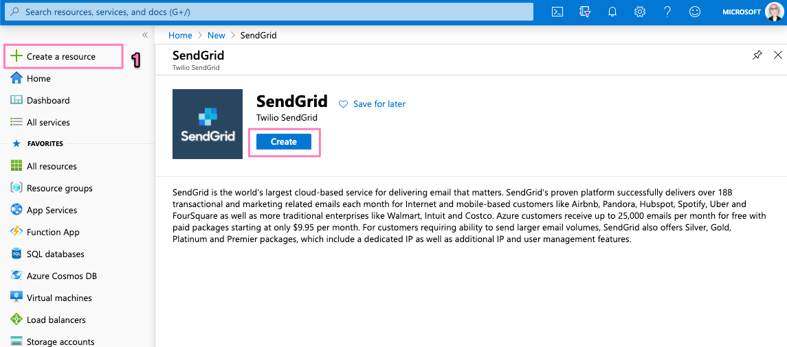
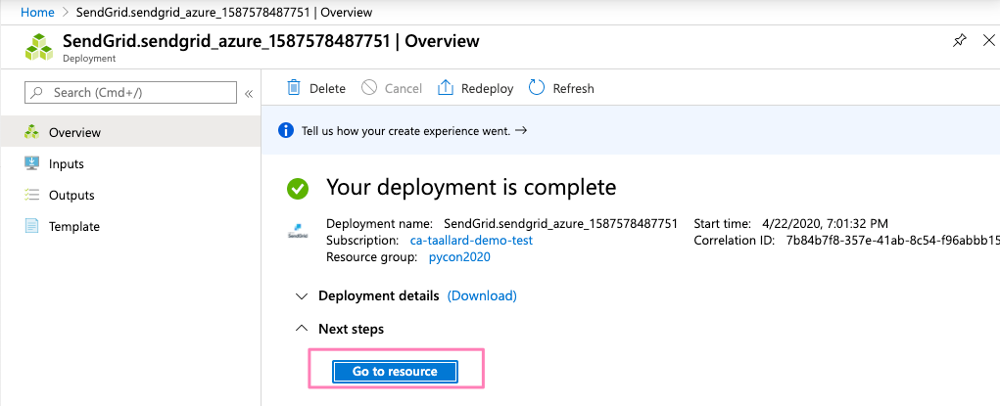
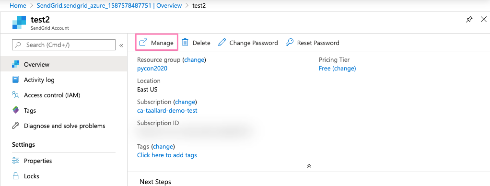
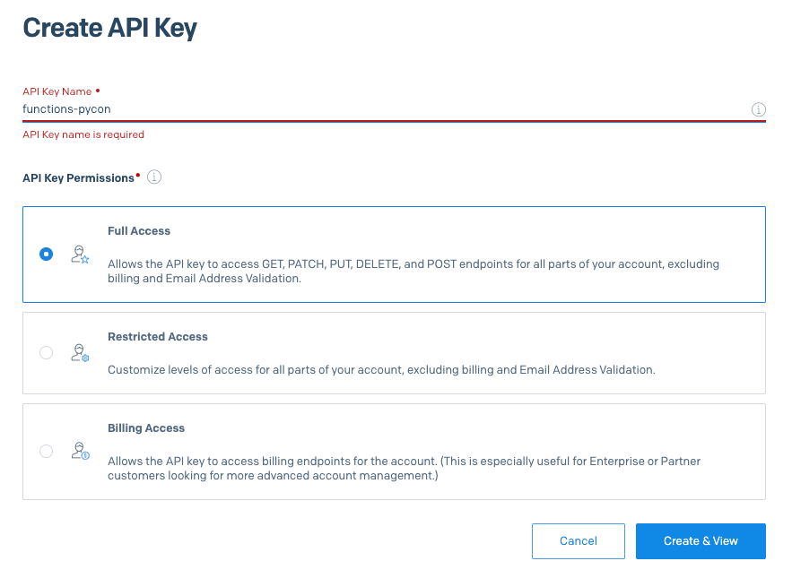
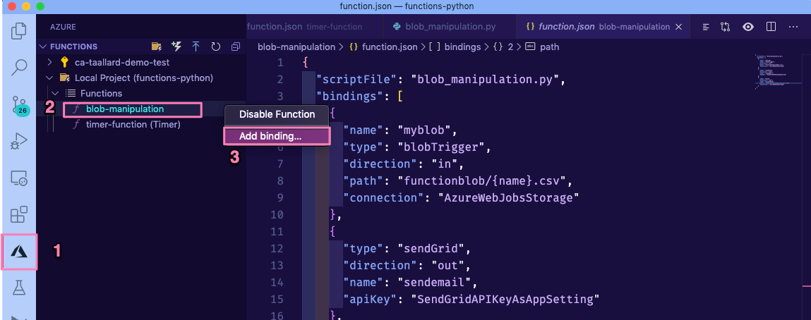

Completing the scenario¶
Completing the scenario¶
To finish the scenario, we are going to do the following:
Create a new function that will have as trigger the Blob Storage file creation
Send automated emails with the URLs from the questions
Let’s go.
Tip
The repository containing all the scripts and solutions to this tutorial can be found at https://github.com/trallard/pycon2020-azure-functions.
👉🏼 The code for this section is in https://github.com/trallard/pycon2020-azure-functions/tree/master/solutions/03-full-pipeline
1. Create your new function¶
Creating a new function in an existing functions project is very similar to the process we followed in section Your first Azure function.
Inside the same VS Code workspace we have been using until now:
Click on the Azure extension on the sidebar.
In the Azure functions, section click on the Create function icon.

Select the Azure Blob storage trigger and AzureWebJobsStorage.
Finally provide the blob path to be monitored:
functionblob/{name}.csv.
As before, I am going to rename the scriptFile to blob_manipulation.py to keep my workspace tidy.
Note
Here we are filtering by file extension and path functionblob/{name}.csv. For more patterns, check the Blob name patterns docs.
2. Add bindings¶
We need to create two more output bindings:
SendGrid: to send an email with the report
Azure Blob Storage: to save the output of the functions
Blob Storage¶
Attach a Blob storage binding. We are going to follow the same process as in section 2. Attach Blob binding. Follow this similar configuration:
{ "type": "blob", "direction": "out", "name": "outputBlob", "path": "functionblob/{name}_tag_plot.png", "connection": "AzureWebJobsStorage" }
SendGrid by Twilio¶
Head to portal.azure.com. On the left sidebar click on + Create a resource. Then on the Search Bar Type SendGrid.
Click on the Create button.
Fill the details in the create form - make sure to select the same resource group we have been using. As an Azure customer, you get 25000 emails free per month. Once completed, click on Review + Create ** and **Create.
You will a progress bar on top of your screen, click on it and wait for your deployment to complete. Once completed, click on Go to resource.
Click on the Manage tab.
You will be redirected to your SendGrid dashboard. Once there click on Settings > API Keys > Create API Key.

In the next screen give your key a name, select Full Access and then Create & view.
Make sure to take note of your API key as we will need it to add the binding.
Back in VS Code: let’s create the binding. Click on the Azure extensions tab in the sidebar. Then in Azure functions right-click on the newly created function (o.e. blob-manipulation** followed by Add binding….
Select the following options:
Binding direction: out
Select binding: SendGrid
Name to identify binding: sendemail
Select setting from “local.settings.json: Click on + Create new local app setting and name it SendGridAPIKeyAsAppSetting
To email, from email and subject: press enter as we will specify in the code
Update your SendGrid API key in your
local.setting.jsonfile.
Tip
After completing these sections your function.json file should look like this:
{
"scriptFile": "blob_manipulation.py",
"bindings": [
{
"name": "myblob",
"type": "blobTrigger",
"direction": "in",
"path": "functionblob/{name}.csv",
"connection": "AzureWebJobsStorage"
},
{
"type": "sendGrid",
"direction": "out",
"name": "sendemail",
"apiKey": "SendGridAPIKeyAsAppSetting"
},
{
"type": "blob",
"direction": "out",
"name": "outputBlob",
"path": "functionblob/figures/{name}_tag_plot.png",
"connection": "AzureWebJobsStorage"
}
]
}
Update your
.envfile to add the sender and receiver email. (Note the sender must be the same email associated with your SendGrid app)..env¶SE_client_id = "******" SE_client_secret = "******" MyStorageConnectionAppSetting = "******" receiver = "******" sender = "******"
3. Updating your code and requirements¶
Let’s update the code to perform the following tasks:
Get the added csv file (Blob Storage)
Perform some basic manipulations with pandas
Create a plot with the top 15 tags used in the questions collected
Send an email with the new questions and the created plot
Similar to section 3. Update your function we will create a
utilsdirectory with aprocessing.pyscript in:blob-manipulation/utils/processing.py¶import base64 import json import logging import os from dataclasses import dataclass from datetime import datetime, timezone from pathlib import Path import matplotlib.pyplot as plt import mplcyberpunk import pandas as pd from jinja2 import Environment, FileSystemLoader, select_autoescape @dataclass class funcprocess: """ Class to perform the data processing functions. """ def data_json(self, dataframe): """Create a json from the dataframe for use by the jinja2 template Args: dataframe (df): clean dataset Returns: json: json version of the dataframe with the SE items """ return json.loads(dataframe.to_json(orient="records")) def email_body(self, answered, unanswered, fig_path): unanswered_json = self.data_json(unanswered) answered_json = self.data_json(answered) date_now = datetime.now(tz=timezone.utc).strftime("%Y-%m-%d") dir_path = project_dir = Path(__file__).resolve().parent template_path = dir_path.joinpath("templates") logging.info(f"Templates located in {template_path}") env = Environment( loader=FileSystemLoader(template_path), autoescape=select_autoescape(["html", "xml"]), ) img_b64 = self.encode_img(fig_path) template = env.get_template("body.html") rendered_template = template.render( date_now=date_now, answered=unanswered_json, unanswered=answered_json, img_b64=img_b64, ).replace("\n", "") return rendered_template def encode_img(self, fig_path): with open(fig_path, "rb") as f: img = f.read() img_base64 = base64.encodestring(img).decode("utf-8") f.close() return img_base64 def create_email(self, answered, unanswered, fig_path): to_email = os.environ.get("receiver") from_email = os.environ.get("sender") subject = "Your daily digest - StackExchange" body = self.email_body(answered, unanswered, fig_path) # Sendgrid message = { "personalizations": [{"to": [{"email": to_email}]}], "subject": subject, "from": {"email": from_email}, "content": [{"type": "text/html", "value": body}], } return json.dumps(message) def clean_data(self, dataframe): processed = dataframe.copy() processed.sort_values(by=["owner_reputation"], inplace=True, ascending=False) processed["tags"] = processed["tags"].map( lambda x: x.lstrip("[") .rstrip("]") .replace(r"'", "") .replace(r",", "") .replace(r"python", "") .replace(r"machine-learning", "") .split() ) return processed def is_answered(self, dataframe): unanswered = ( dataframe.loc[dataframe["is_answered"] == False] .copy() .drop(columns=["is_answered"]) ) answered = ( dataframe.loc[dataframe["is_answered"] == True] .copy() .drop(columns=["is_answered"]) ) return answered, unanswered def create_plot(self, dataframe): import mplcyberpunk import matplotlib.pyplot as plt import vapeplot # general settings plt.style.use("cyberpunk") vapeplot.set_palette("cool") plt.rcParams["axes.linewidth"] = 0.8 plt.rcParams.update({"font.size": 12}) foreground = "#efefef" # creating the plot fig = plt.figure(figsize=(16, 12)) ax = ( pd.Series([item for sublist in dataframe.tags for item in sublist]) .value_counts() .head(n=15) .plot(kind="barh") ) # customise ax.set_ylabel("Tags", fontsize=18, fontweight="black", color=foreground) ax.set_xlabel("Count", fontsize=18, fontweight="black", color=foreground) ax.spines["left"].set_smart_bounds(True) ax.spines["bottom"].set_smart_bounds(True) ax.spines["top"].set_color("none") ax.spines["right"].set_color("none") ax.spines["bottom"].set_color(foreground) ax.spines["left"].set_color(foreground) date_now = datetime.now(tz=timezone.utc).strftime("%Y-%m-%d") fig_path = f"{date_now}-tags-count.png" fig.savefig(fig_path, dpi=fig.dpi, bbox_inches="tight") return fig_path def data_wrangle(self, dataframe, email=True): """Call the helper methods to process the data in the Blob Args: dataframe (df): Dataframe with the SE items """ processed = self.clean_data(dataframe) # split if answered or not answered, unanswered = self.is_answered(processed) # create plots fig_path = self.create_plot(processed) if email == True: email_item = self.create_email(answered, unanswered, fig_path) outputs = [fig_path, email_item] return outputs else: outputs = [fig_path] return outputs
And update our
blob_manipulation.pyscript:blob-manipulation/blob_manipulation.py¶import logging from pathlib import Path from typing import Iterator, Optional import azure.functions as func import pandas as pd from .utils import processing # -------------------------- # Helper methods # -------------------------- def get_vars() -> Optional[bool]: """Collect the needed keys to call the APIs and access storage accounts. Returns: bool: Optional - if dotenv file is present then this is loaded, else the vars are used directly from the system env """ try: dotenv_path = find_dotenv(".env") logging.info("Dotenv located, loading vars from local instance") return load_dotenv(dotenv_path) except: logging.info("Loading directly from system") # -------------------------- # Main method # -------------------------- def main( myblob: func.InputStream, sendemail: func.Out[str], context: func.Context, outputBlob: func.Out[bytes], ): logging.info( f"⚡️ Python blob trigger function processed blob \n" f"Name: {myblob.name}\n" f"Blob Size: {myblob.length} bytes" ) get_vars() # pass the object created_file = myblob try: # read the csv file from the blob se_items = pd.read_csv(created_file) except OSError as e: logging.error(f"EXCEPTION: Unable to read input: {e}") sys.exit(254) except Exception as e: logging.error(f"EXCEPTION: {e}") sys.exit(255) # use the data processing methods processor = processing.funcprocess() wrangling_out = processor.data_wrangle(se_items, email=True) if len(wrangling_out) == 2: sendemail.set(wrangling_out[1]) logging.info("📨 Email has been sent") # stores in the Blob container with open(wrangling_out[0], "rb") as f: outputBlob.set(f.read()) f.close() if __name__ == "__main__": # set logging format - personal preference log_fmt = "%(asctime)s - %(name)s - %(levelname)s - %(message)s" logging.basicConfig(level=logging.INFO, format=log_fmt) # call main function main()
Finally make sure to update your
requirements.txtfile:requirements.txt¶azure-functions python-dotenv==0.13.0 requests==2.23.0 jinja2==2.11.2 pandas==1.0.3 mplcyberpunk==0.1.11 vapeplot==0.0.8 matplotlib==3.2.1
We are now ready to debug the functions locally 🎉!
4. Running and debugging locally¶
Press F5. You should see the function being started in the output terminal in VS Code.
Click on the Azure extension then on the Azure functions section right-click on the timer-function > Execute function now.
This will trigger the execution of your timer function and the Blob function once the .csv. the file is added to your blob.
5. Deploying your function¶
If you remember correctly, we first created a functions project and then added the processing function. This allows us to deploy both functions directly within the same app project.

We will follow the same process as before:
Deploy from the Azure functions extension in VS Code.
Head to portal.azure.com > Function App > <your function app> > Configuration and we will add the new variables we added to this function:
receiver, sender, SendGridAPIKeyAsAppSetting.
You can now trigger your function from the portal!!!
 Additional resources and docs
Additional resources and docs